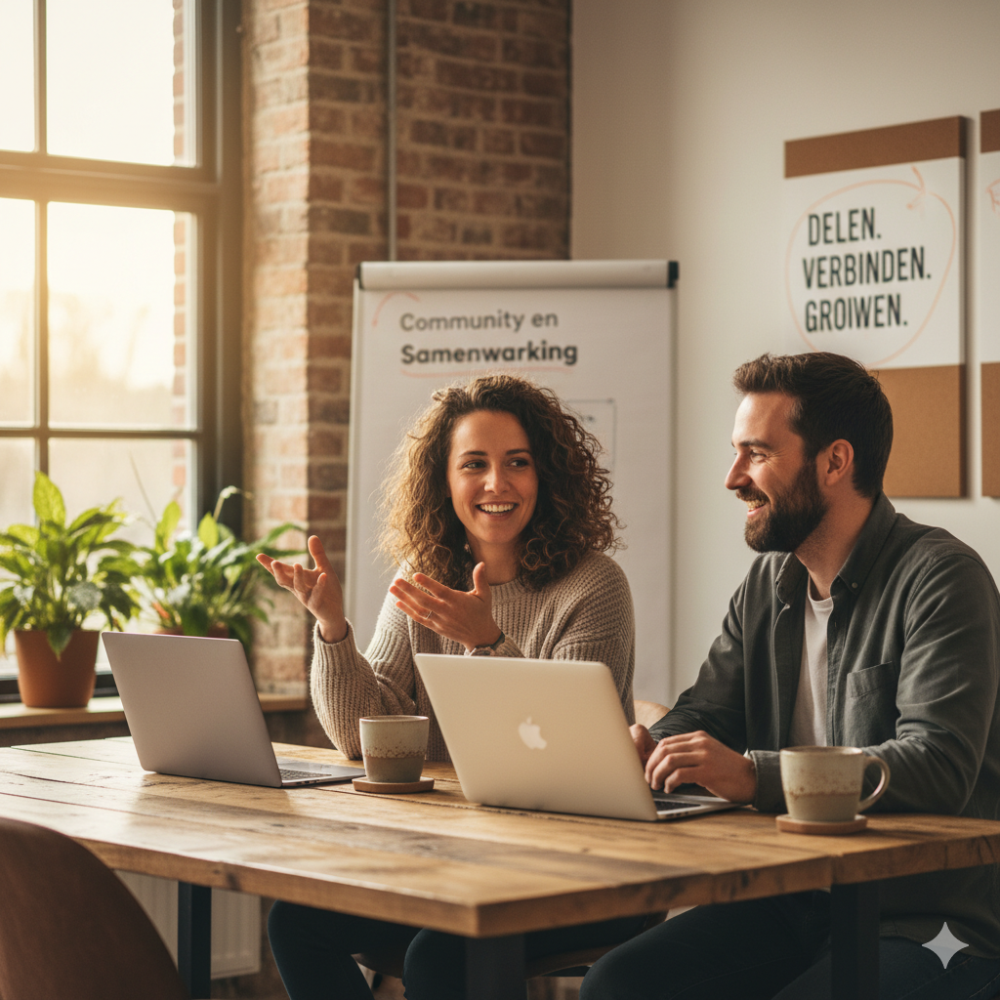
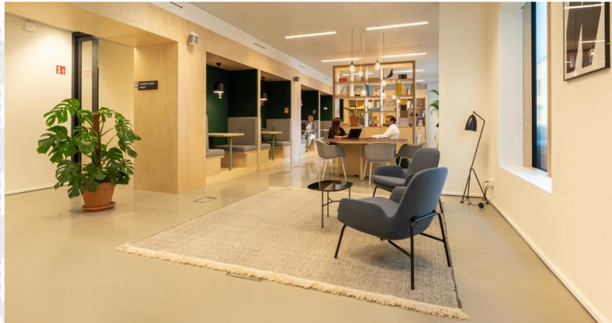
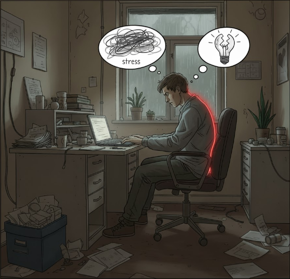

Inzichten
We leggen uit waarom cafés vaak niet geschikt zijn: niet omdat ze ongezellig zijn, maar omdat ze je hersenen continu prikkelen.
Thuis is het soms te stil, cafés zijn te druk — maar jij wilt gewoon een plek waar je kunt knallen.
Steeds meer zzp’ers en remote workers lopen tegen hetzelfde probleem aan: ze willen buiten werken, maar vinden geen plek waar focus, comfort en energie samenkomen.
Deze website helpt jou om de perfecte werkplek buitenhuis te vinden — met inzichten, oplossingen en tools die je meteen kunt toepassen.
Je neemt je laptop mee naar een café, vol goede moed...
Je voelt de frustratie opbouwen. De focus is weg, je werk vertraagt, en aan het eind van de dag heb je minder gedaan dan gepland.
“Ik dacht productiever te zijn, maar het kostte me juist meer tijd en energie.” – Eva
We leggen uit waarom cafés vaak niet geschikt zijn: niet omdat ze ongezellig zijn, maar omdat ze je hersenen continu prikkelen.
Van coworking spaces tot bibliotheken en hotel lobby’s: vind plekken die wél werken.
Slimme gewoontes en accessoires die jouw werkdag aangenamer maken.
Je leert hoe een verkeerde werkomgeving je energie, focus en prestaties beïnvloedt.
Je bent niet alleen. Duizenden zelfstandigen zoeken dagelijks naar balans tussen vrijheid en focus. Deze site wil een community bouwen van professionals die hun ervaringen delen en elkaar inspireren.
Deel jouw favoriete werkplek, tip of gewoon een frustratie — samen maken we werken buiten de deur slimmer én leuker.
Kortom: voor iedereen die vrijheid waardeert, maar ook productiviteit wil behouden.

Cafés zijn gezellig, maar zelden ontworpen om te werken. Denk aan:

Van coworking spaces tot rustige hotel-lobby’s — er zijn genoeg plekken waar jij geconcentreerd kunt werken. We laten zien welke opties er zijn in jouw buurt en hoe je ze kiest op basis van sfeer, prijs en voorzieningen.
Ontdek alternatievenMet de juiste voorbereiding kun je bijna overal werken. We delen praktische adviezen over hoe je reist met je spullen, ergonomie behoudt en welke tools je helpen efficiënt te blijven.
Tips voor slim werken
Een verkeerde werkplek zorgt voor snellere mentale vermoeidheid, minder creativiteit, en meer stress. Wil je begrijpen waarom dat gebeurt?
De gevolgen en welzijn